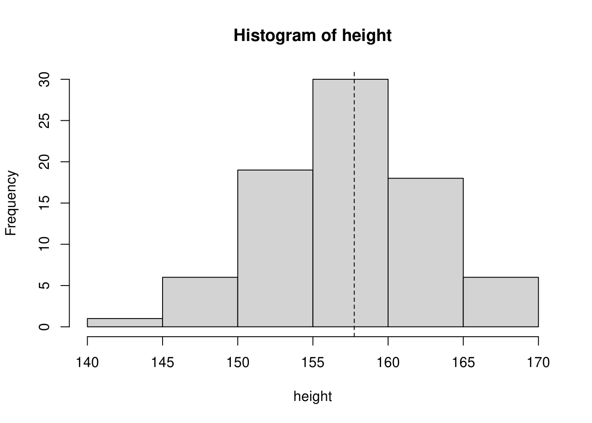

第2講 平均値とはやじろべえの視点である
本講では以下のデータフレームを利用しています。
2.3 度数分布表での平均値 {#2-3＃}
df %>%
dplyr::select(`階級` = class, `度数` = n, `階級値` = mids, `階級幅` = range,
`累積度数` = cumsum_n, `相対度数` = prop, `累積相対度数` = cumsum_prop)（算術）平均は全ての観測値の総和を総データ数で除したものですので、観測値を各階級の代表値である階級値で近似すると下式が成り立つことが分かります。
\[\mbox{平均} = \frac{\sum{\mbox{観測値}_i}}{総データ数} = \frac{\sum{\mbox{観測値}_i}}{\sum{度数}_i} \fallingdotseq \frac{\sum{(\mbox{階級値}_i \times \mbox{度数}_i)}}{\sum{度数}_i} = \sum{(\mbox{階級値}_i \times \mbox{相対度数}_i)}\]
なぜなら \[\frac{\mbox{度数}_i}{\sum{\mbox{度数}_i}} = \mbox{相対度数}_i\]
\[i = 1, 2, ... , n\]
df %>%
dplyr::select(A = mids, B = prop) %>%
dplyr::mutate(`A x B` = A * B) %>%
dplyr::rename(`A 階級値` = A, `B 相対度数` = B, `A x B` = `A x B`)df %>%
dplyr::select(A = mids, B = prop) %>%
dplyr::mutate(`A x B` = A * B) %>%
dplyr::summarise(`平均値` = sum(`A x B`))実データで求めた平均値は157.575ですので、階級値から求めた平均値との差は-0.175となり、度数分布表を作ることは平均値に大きな影響を与えないことが分かります。
2.4 平均値のヒストグラムの中での役割
階級値から求めた平均値をヒストグラム上にプロットすると下図のようになります。
with(x, hist(height))
abline(v = 157.75, lty = 2)
2.5 平均値をどう捉えるべきか
平均値の捉え方は様々考えられますが、テキストでは下記のようにまとめています。
- 全データ（値）を代表する値（点）
- データは平均値の周辺に分布する
- 数多く現れるデータは平均値への影響が大きい
- データの分布が対象の場合、平均値は対象軸
2.6 練習問題
2.6.1 解答例
data.frame(mids = c(30, 50, 70, 90, 110, 130), n = c(5, 10, 15, 40, 20, 10)) %>%
dplyr::mutate(prop = prop.table(n), cm = mids * prop) %>%
dplyr::rename(`階級値` = mids, `度数` = n, `相対度数` = prop, `階級値×相対度数` = cm)data.frame(mids = c(30, 50, 70, 90, 110, 130), n = c(5, 10, 15, 40, 20, 10)) %>%
dplyr::mutate(prop = prop.table(n), cm = mids * prop) %>%
dplyr::summarise(`平均値` = sum(cm))【コラム】平均値のとり方は、１つではない
算術平均（Arithmetic Mean）
mean(c(10, 90))## [1] 50幾何平均（Geometric Mean）または相乗平均
psych::geometric.mean(c(10, 90))## [1] 30二乗平均平方根（Root Mean Square）または二乗平均
sqrt(mean(c(10, 90) ^ 2))## [1] 64.03124調和平均（Harmonic Mean）
psych::harmonic.mean(c(10, 90))## [1] 18トリム平均は体操競技の評点などで使われる平均値の計算方法で、値を小さい方から順に並べ、上位側と下位側から一定の割合で値を除き算術平均を求めます。外れ値や異常値などを影響を排除するために使われることが多いです。
mean(c(0, 1:8, 30))## [1] 6.6mean(c(0, 1:8, 30), trim = 0.25) # データの両側2.5%を対象外とする## [1] 4.5
階級幅が変わると平均値はどうなるか？
では、階級幅が変わると度数分布表から求める平均値はどのようになるか確認してみましょう。
階級幅が倍になった場合
x %>%
dplyr::mutate(class = cut(height,
breaks = c(140, 150, 160, 170),
include.lowest = FALSE, right = TRUE)) %>%
dplyr::count(class) %>%
dplyr::mutate(class_value = as.character(class)) %>%
tidyr::separate(class_value, into = c("l", "h"), sep = ",") %>%
dplyr::mutate(l = as.numeric(stringr::str_remove(l, "[[:punct:]]")),
h = as.numeric(stringr::str_remove(h, "[[:punct:]]"))) %>%
dplyr::mutate(mids = ((l + 1) + h) / 2) %>%
dplyr::mutate(range = h - l, cumsum_n = cumsum(n),
prop = prop.table(n), cumsum_prop = cumsum(prop)) %>%
dplyr::select(A = mids, B = prop) %>%
dplyr::mutate(`A x B` = A * B) %>%
dplyr::summarise(`階級値による平均値` = sum(`A x B`)) %>%
dplyr::mutate(`算術平均` = mean(x$height), `差` = `算術平均` - `階級値による平均値`)階級幅が半分になった場合
x %>%
dplyr::mutate(class = cut(height,
breaks = seq(from = 140, to = 170, by = 2.5),
include.lowest = FALSE, right = TRUE)) %>%
dplyr::count(class) %>%
dplyr::mutate(class_value = as.character(class)) %>%
tidyr::separate(class_value, into = c("l", "h"), sep = ",") %>%
dplyr::mutate(l = as.numeric(stringr::str_remove(l, "[[:punct:]]")),
h = as.numeric(stringr::str_remove(h, "[[:punct:]]"))) %>%
dplyr::mutate(mids = ((l + 1) + h) / 2) %>%
dplyr::mutate(range = h - l, cumsum_n = cumsum(n),
prop = prop.table(n), cumsum_prop = cumsum(prop)) %>%
dplyr::select(A = mids, B = prop) %>%
dplyr::mutate(`A x B` = A * B) %>%
dplyr::summarise(`階級値による平均値` = sum(`A x B`)) %>%
dplyr::mutate(`算術平均` = mean(x$height), `差` = `算術平均` - `階級値による平均値`)